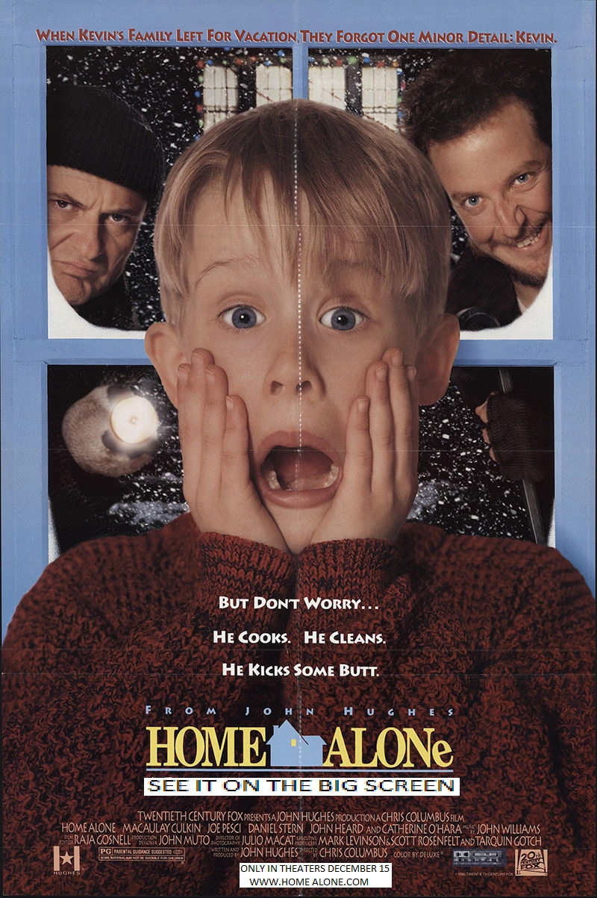

Cheesecake is my favorite food because it is sweet, tangy and customizable depending on my mood.
Green is my favorite color because I associate it with the outdoors and feeling relaxed.
I love Home Alone because it reminds me of my childhood and always makes me laugh, no matter how many times I've watched it.